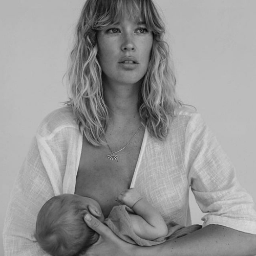
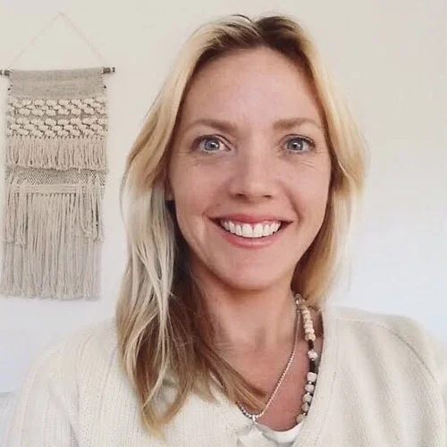
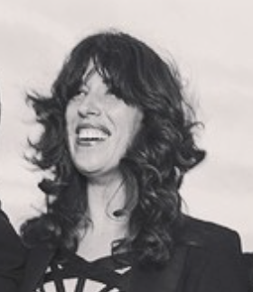
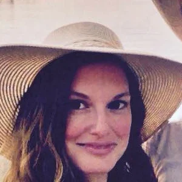
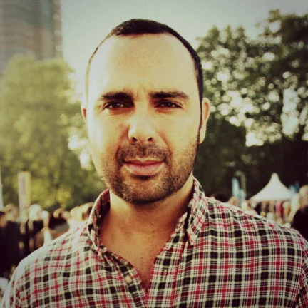

She was calm and professional yet kind and warm. She really helped support my partner so he could support me. I felt truly cared for in a very special way.

Dr Camilla White — GP & Mother of Three
Nat has the most divine way of making you feel safe, informed, connected and fully in control. She is a wealth of knowledge, experience and intuition.

Amy Sinclair — Mother of Two
I was visualising an intimate, drug-free water birth and my wish became a reality with the help of Nathalie. This was the best investment and I can highly recommend having this beautiful woman by your side.

Cisco Tschurtschenthaler — Mother of Two
I felt supported in every essence of pregnancy and mothering. You just completely 'got' everything I needed and made me feel calm and confident whenever I started to doubt myself.

Renée D'Arcy — Mother of Three
If you want the best for your birth, choose the wonderful Nathalie. She has the ability to create the most respectful, beautiful, gentle and sacred space. At my most vulnerable I felt safe and connected.

Emma Bellamy — Mother of Three
Nathalie has supported me for the births of two of my children. Her calm and grounded energy coupled with her extensive knowledge gave me such comfort. A supported mother is the best kind of mother.

Priscylla Elliott — Mother of Four
Nathalie was a constant support with the most beautiful nature. We adored her manner, communication and we found all of her teachings highly informative and clear.

Lucy Folk — Mother
Having her by my side during my pregnancy and postpartum period was so comforting. She helped me to understand that there really is no need for fear around birthing, to trust my intuition.

Sophie Willing — Mother of Two
Nathalie provided wonderful support throughout my pregnancy and birth. Her unwavering calmness was so beneficial in such a pivotal event in life.

Bethany Cecins — Mother of One
It was so comforting to know I could message her about anything pregnancy and birth related when the doubts crept in.

Shanay Hall — Mother of Three
Knowing that you were going to be by our side during the birth was extremely reassuring. You encouraged me in every moment I was beginning to feel like I couldn't do it anymore.

Kaity Fox — Mother of Two
You made us feel so nurtured — gorgeous smile, calm presence, yummy food, amazing pictures, and you transformed the house into the most beautiful sanctuary. Your support was invaluable.

Karla Hammer — Mother of Three
I truly felt more held by the doula than anyone else in the birth process and I literally don't know what we would have done without her.

Técha Noble — Mother of Two
Her calming presence and gentle nature was invaluable. Just being around her makes you feel calm and relaxed always.

Tania C — Mother of Two
Her beautiful calm open nature is a pleasure to be around. Together we achieved a completely natural vaginal birth after cesarean!

Nerine M — Mother of Two
My labor turned out to be a long one with complications, but it is not a bad memory thanks to Nathalie's warm support.

Jennifer PD — Mother of One
Nathalie not only exceeded every expectation, she was a pivotal component of my dream birth story from start to finish.
Cassandra — Mother of Two
Nathalie strikes a perfect balance between being both personal and professional in her approach and supportive guidance always.

Kate B — Mother of One
Without her he would have been terrified and lost. I felt safe with her and could better control my fears always.

Mai K — Mother of Four
I don't think I could have endured 30 hours of labor without having you there helping me breathe through contractions.
Laurie S — Mother of Two
With you in my corner, I didn't feel fearful at all — I felt confident, well balanced and full of trust in my body.

Thea V — Mother of Two
The overwhelming calming confidence you gave my wife was what I liked best. Your calm confidence and knowledge allowed her to trust her body.

George Gorrow — Father
I highly recommend Nathalie! She was our doula for our third baby, and she helped in so many ways!

Jan Svarovsky — Father of Three
Nathalie brought a beautiful calming energy through our journey of being parents.

Ryan Bienefelt — Father of One
Nat was an amazing support to my wife and I throughout the whole process, from preparation for birth.

Ryan Allen — Father of Two
After the birth I realised that she really was the most important support person in the room.
Nico Georgieff — Father of Two
We loved the pre-natal support and check-ins, this was of course very comforting to us.

Rory K — Father of Two
Soon I realised that Nathalie was able to support both of us in a way that I knew I couldn't do alone.
George Popov — Father of Two
I actually don't know how you are supposed to do it without one — both as a mother and a father.

Felix — Father of Two
Initially, I thought having someone else there during birth would take away from my role supporting my partner. I was wrong.
Jamie Baxter — Father of Two